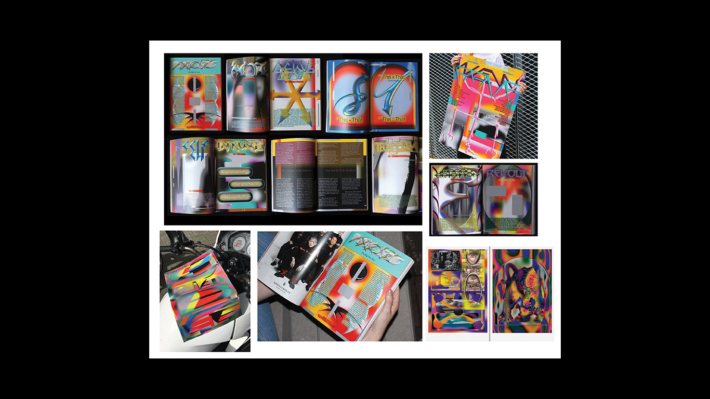
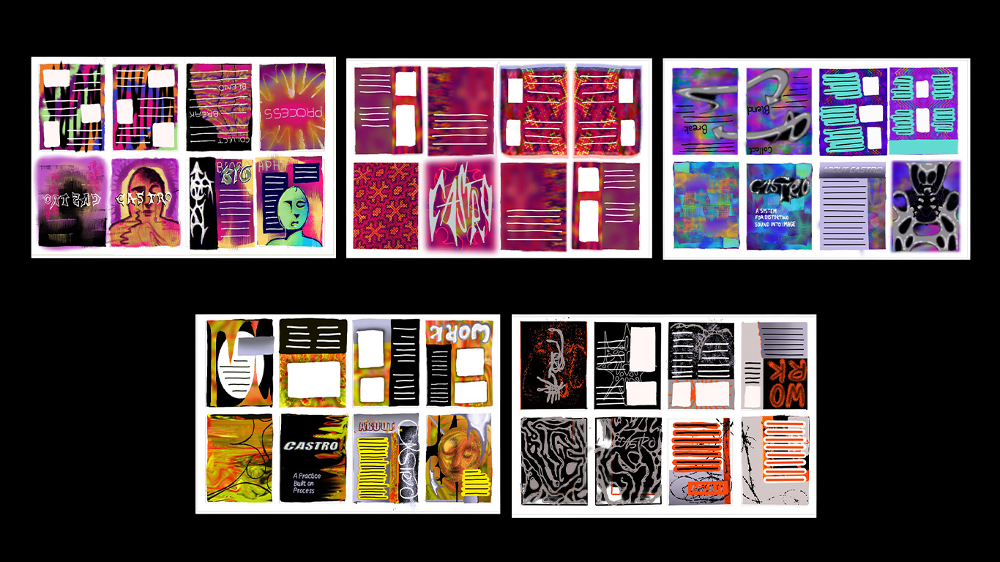
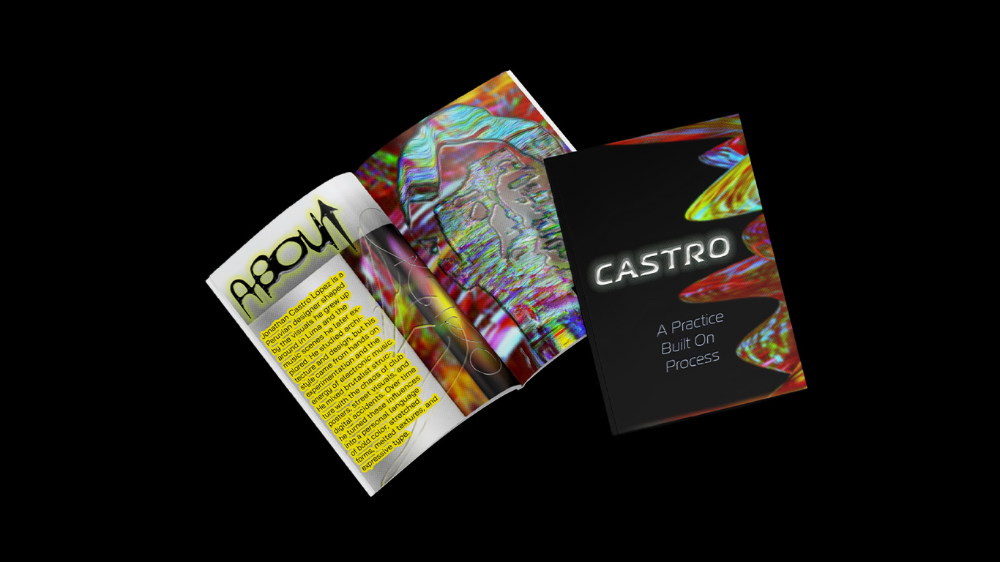
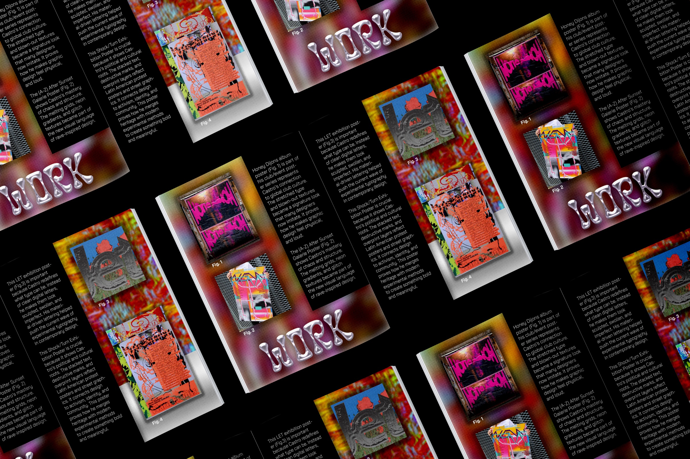
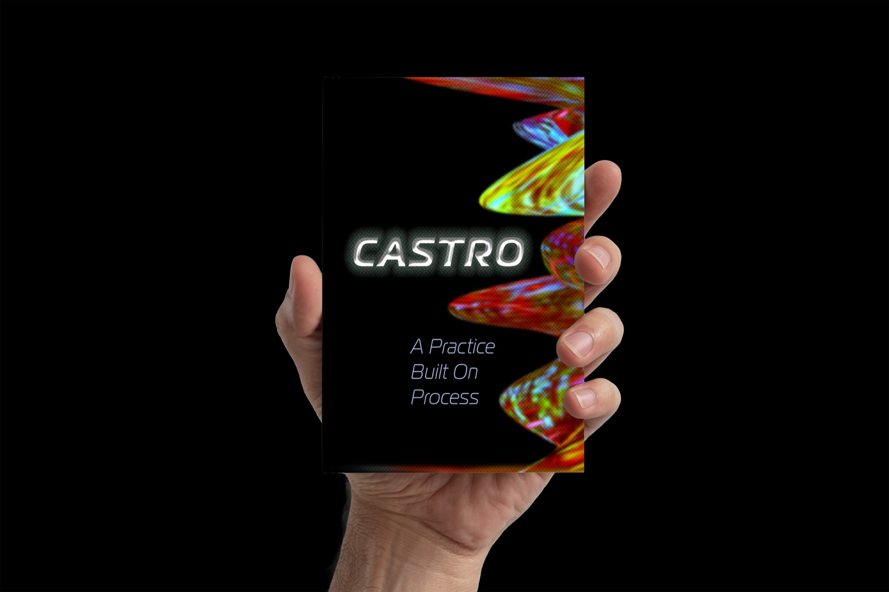
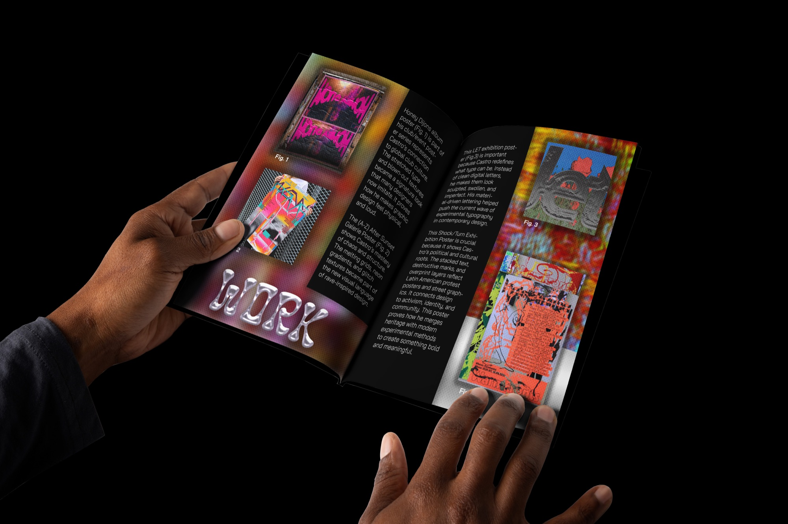
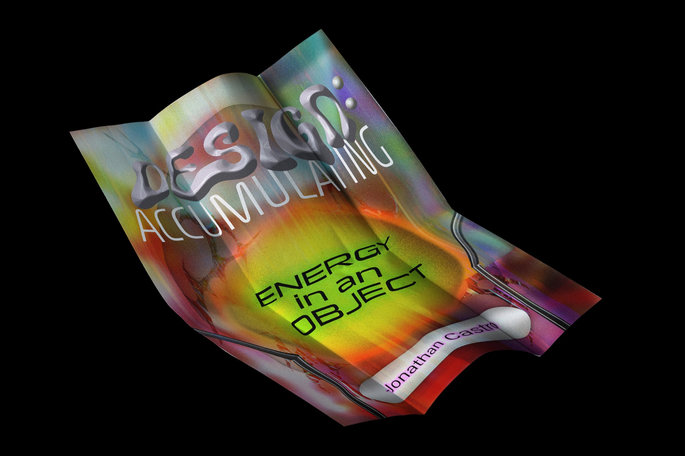

Designer Tribute Zine
An eight-page zine and accompanying poster exploring designer Jonathan Castro's visual language through iridescent liquid artwork, expressive lettering, and restrained black typography.
- Deliverables
- Eight-page folded zine, quote poster
This project examines Jonathan Castro's design practice and the visual qualities that make his work distinctive. I wanted the publication to reflect the energy of his imagery while maintaining a clear editorial structure for the written content.
The design balances fluid, colorful artwork with simpler typography, allowing the imagery to carry the atmosphere without making the information difficult to follow.
- Research into Jonathan Castro's work
- Written biographical and conceptual content
- Visual references and layout studies
- Eight-page folded zine
- Quote poster
Looking closely at Jonathan Castro.
I studied his work to see what makes it his: vibrant color, chaotic compositions, and references pulled from his Latin culture.

Working out the layout.
Early sketches tested how the zine could unfold across eight folded pages, with each spread layering a little more than the last.

Piles of process and meaning.
The concept came together as layers building on layers. The zine builds page by page, and the poster boils the same idea down to one statement.





The interior pairs liquid, iridescent forms with gradients of blue, orange, pink, and green. These images occupy much of the open page space, giving the publication a fluid visual character.
The typography provides contrast. The word About appears in outlined, hand-drawn lettering angled across a corner, while a yellow highlight isolates a block of body text from the colorful image behind it. On the cover, chrome-style lettering spells Castro against a dark background, with the tagline beneath in smaller, lighter type.
The dark cover establishes a more restrained entry point before the reader encounters the brighter interior. Warped lettering connects the two treatments, so the change in color and imagery feels deliberate rather than disconnected. The accompanying quote poster extends the project into a second editorial format.